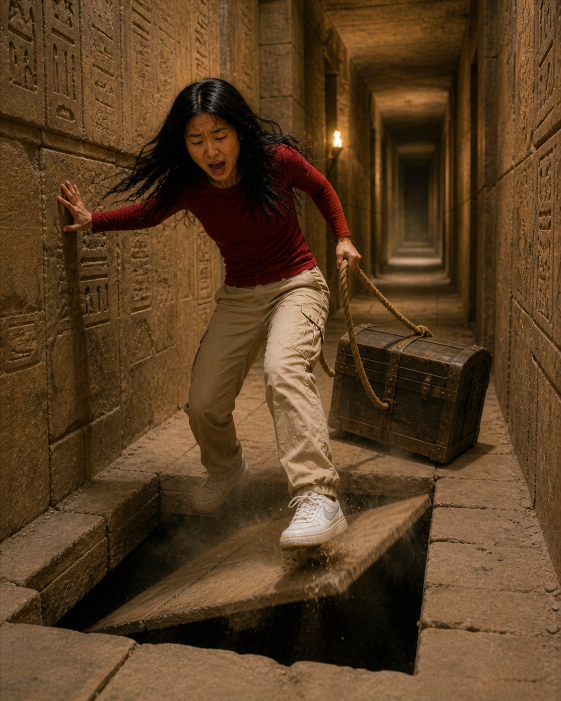

|
Patricia strained as she dragged the heavy chest through the
narrow stone corridors of the pyramid, its metal edges scraping
loudly against the floor. The air was thick with dust, and
every step echoed through the ancient passageways. She paused
to catch her breath, adjusting her grip on the rope, determined
not to give up now. The walls around her were covered in
carvings, but she barely noticed them—her focus was on getting
the chest out. As she pulled it forward again, the ground beneath
her suddenly shifted with a dull click.
|
 |
|
Before she could react, a trap door swung open beneath her feet.
Patricia dropped instantly, the chest slipping from her hands as she
slid down a steep, hidden chute. The darkness rushed past her until
she was thrown out onto a solid surface below. Dazed, she looked
up—and froze. The room around her shimmered with gold. Piles of coins,
statues, and ancient artefacts filled the chamber, reflecting light
in every direction. For a moment, she forgot the danger completely.
She hadn’t just fallen—she had discovered something incredible.
|
 Back to Start
Back to Start Google
Google